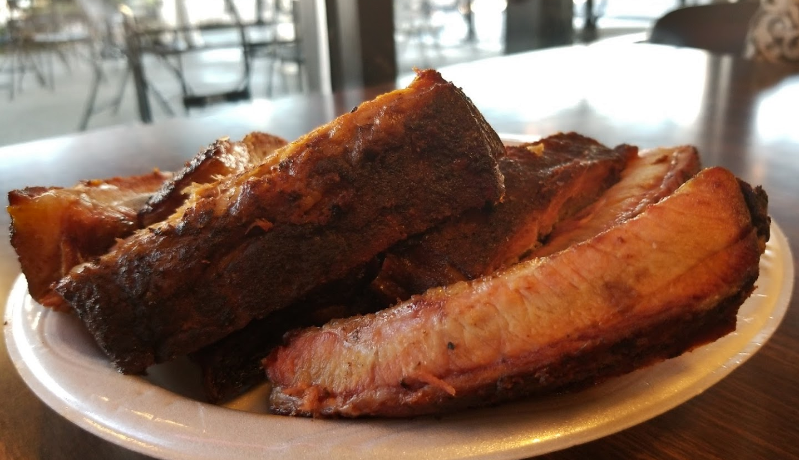
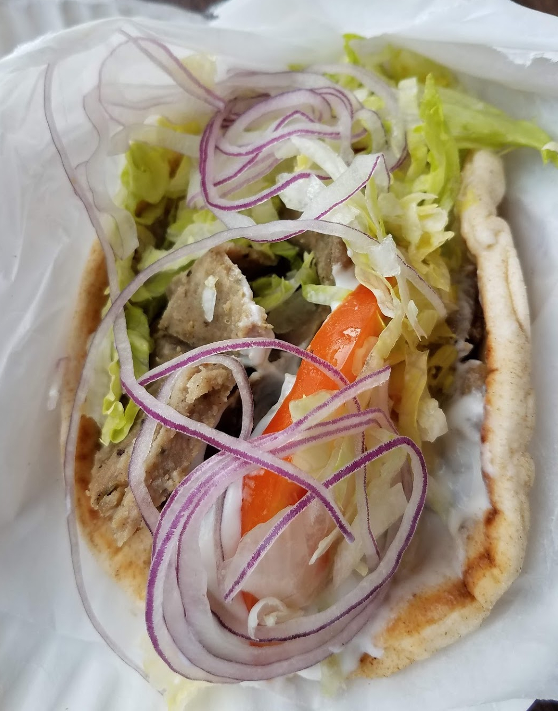

We are a small, family owned restaurant that started out in malls in 1984 and moved to Pearl in 1993. Many refer
to us as a 'mom and pop store'
while others refer to us as 'that secret hole in the wall.' We have something for everyone, from giant
sandwiches to our award winning rib plates.
Our catfish is seasoned with our own original recipe, and our chicken tenders go great with our secret honey
mustard recipe made with local honey.
We're a family-friendly restaurant at an affordable price, and we hope to see you soon!

